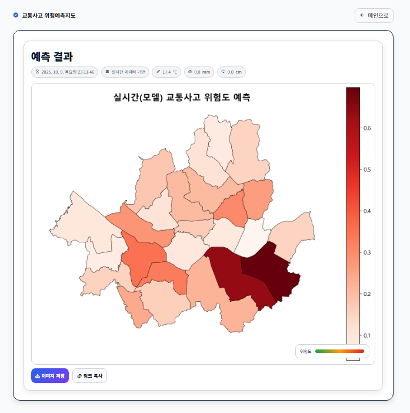
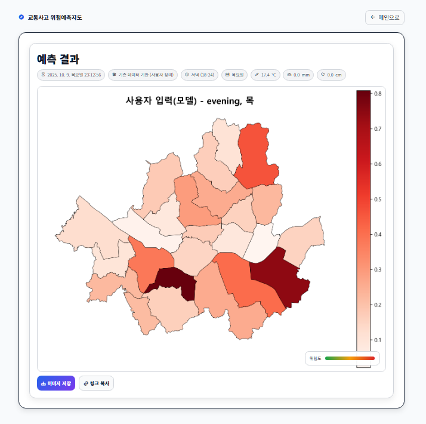
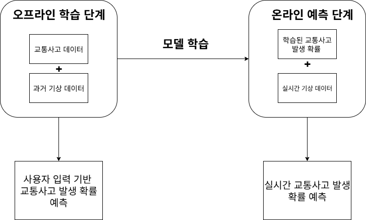

Overview
프로젝트 소개
2021년부터 2023년까지의 서울시 교통사고 데이터에 기온, 강수량, 적설량, 교통량, 지역 통계 데이터를 결합해 자치구별 사고 발생 확률을 예측했습니다. 결과는 서울시 행정구역 단위의 Choropleth 지도에 색상 농도로 표시해 고위험 지역을 빠르게 파악할 수 있게 구성했습니다.
Project
서울시 교통사고·기상·교통량 데이터를 학습해 자치구별 사고 위험도를 지도에 시각화한 예측 시스템

Overview
2021년부터 2023년까지의 서울시 교통사고 데이터에 기온, 강수량, 적설량, 교통량, 지역 통계 데이터를 결합해 자치구별 사고 발생 확률을 예측했습니다. 결과는 서울시 행정구역 단위의 Choropleth 지도에 색상 농도로 표시해 고위험 지역을 빠르게 파악할 수 있게 구성했습니다.
Problem
기존 사고 다발 지역 분석은 과거 통계 중심이라 실시간 기상 변화와 교통량 변화를 반영하기 어렵습니다. 이 프로젝트는 정적인 사고 통계에 기상청 초단기실황 API와 서울시 TOPIS 교통량 데이터를 결합해 현재 조건에서의 동적인 위험도 변화를 보여주는 것을 목표로 했습니다.
Flow
TAAS·TMACS·기상청·서울시 열린데이터 수집 → 자치구·시간대·요일 단위 전처리 → 결측치 보완과 SMOTE 적용 → LightGBM 이진 분류 모델 학습 → Flask API 연결 → 사용자 입력 또는 실시간 데이터 기반 예측 → 서울시 위험도 지도 시각화
Troubleshooting
교통사고가 발생하지 않은 샘플이 많아 모델이 사고 미발생 쪽으로 치우칠 가능성이 있었습니다.
자치구, 시간대, 요일 조합 단위로 데이터를 만들면 실제 사고 발생 클래스보다 미발생 클래스가 훨씬 많아집니다.
사고 발생 여부를 이진 분류 문제로 정의하고 SMOTE를 적용해 사고 발생 클래스의 학습 비중을 보정했습니다.
위험 예측 모델은 전체 정확도만 높이는 것보다 실제 사고 가능성을 놓치지 않도록 데이터 분포를 먼저 다루는 과정이 중요했습니다.
사용자 입력 기반 예측과 실시간 데이터 기반 예측 결과를 단순히 화면만으로 비교하기 어려웠습니다.
두 예측은 같은 모델을 사용하지만 입력 조건이 달라 지역별 위험 순위와 확률 차이를 정량적으로 확인할 필요가 있었습니다.
Spearman 순위상관계수, RMSE, Bias, Jaccard Index, Elasticity를 함께 계산해 공간적 위험 순위와 예측값 차이를 비교했습니다.
지도 기반 결과는 시각화와 함께 순위·오차·고위험군 일치도를 같이 제시해야 예측 결과의 의미가 분명해졌습니다.
Screens


Learning
데이터 수집과 전처리, 모델 학습, API, 지도 화면이 하나로 이어져야 예측 결과가 사용자가 판단할 수 있는 서비스 형태로 전달된다는 점을 경험했습니다.